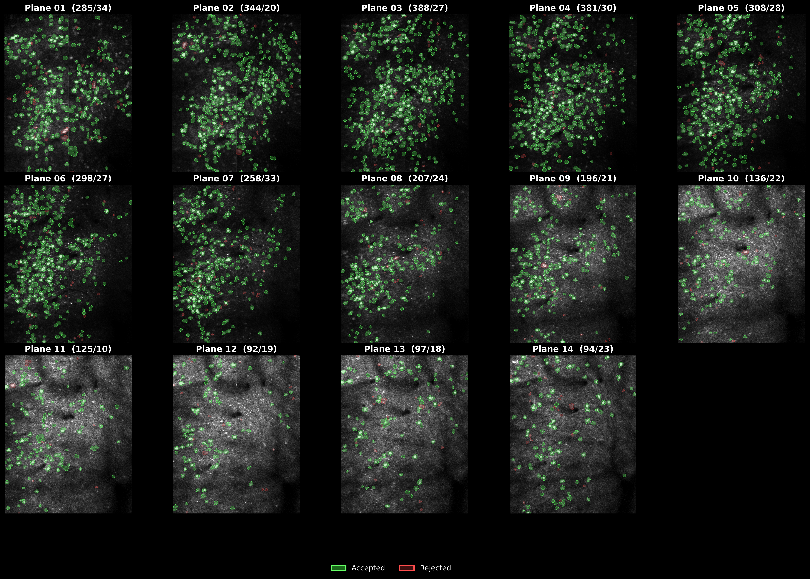
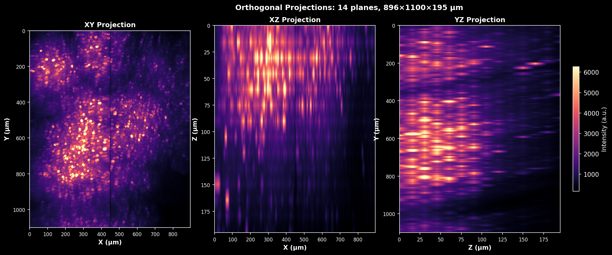
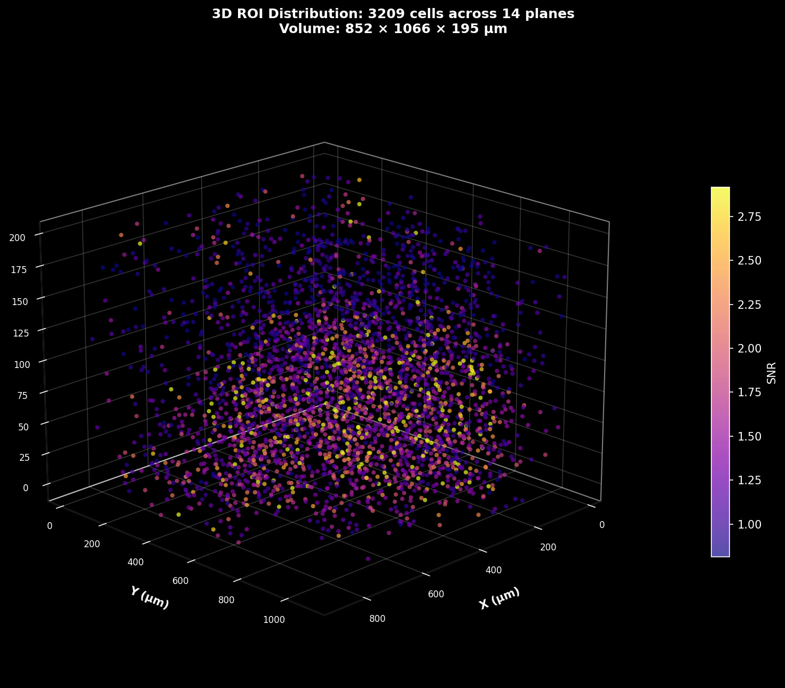
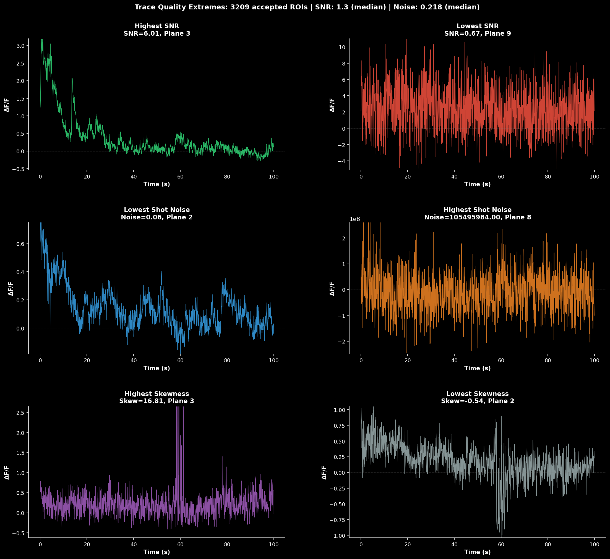
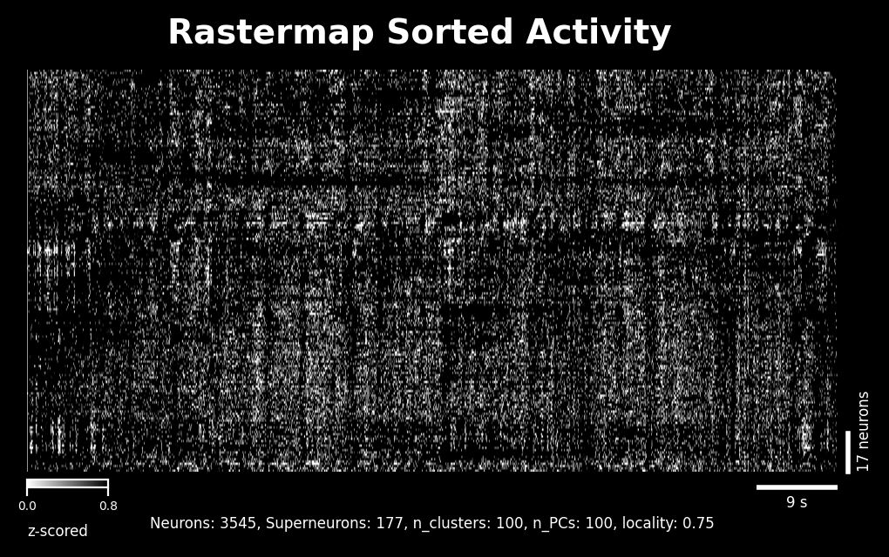
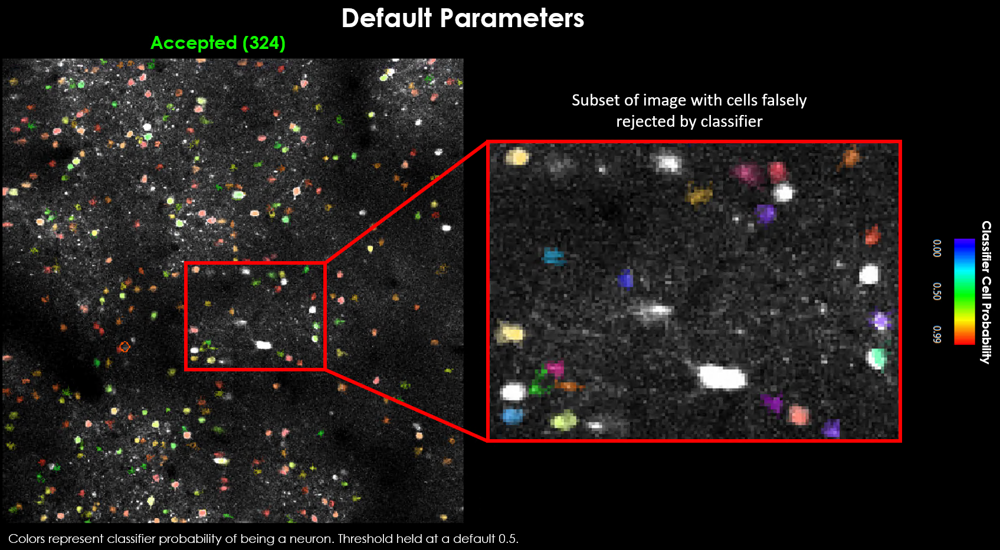
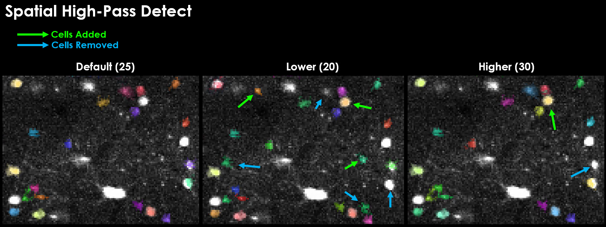

User Guide#
For
This guide covers everything you need to process volumetric calcium imaging data with LBM-Suite2p-Python.
Tip
For interactive examples, see the Quickstart Notebook and Grid Search Notebook.
Input formats#
The pipeline accepts all filetypes at mbo_utilities imread() accepts.
uv run mbo formats
Supported input formats:
.tif, .tiff - TIFF files (BigTIFF, OME-TIFF, ScanImage)
.zarr - Zarr v3 arrays
.bin - Suite2p binary format (with ops.npy)
.h5, .hdf5 - HDF5 files
.npy - NumPy arrays
.json - Loads parent Zarr array
Supported output formats:
.tiff - Multi-page BigTIFF
.zarr - Zarr v3 with OME-NGFF metadata
.bin - Suite2p binary format
.h5 - HDF5 format
.npy - NumPy array (with .json metadata)
Pipeline Basics#
The lsp.pipeline() function is the recommended entry point for all processing. It automatically handles:
Any input type: Files, directories, or pre-loaded arrays from
mbo_utilitiesMulti-plane data: Processes each z-plane independently
Multi-ROI data: Stitches or splits ScanImage multi-ROI acquisitions
Metadata extraction: Auto-populates frame rate, pixel resolution, etc.
import lbm_suite2p_python as lsp
# Process a directory of raw ScanImage TIFFs
results = lsp.pipeline(
input_data="D:/data/raw_tiffs",
save_path="D:/results",
)
# Process specific planes from a volume (1-indexed)
results = lsp.pipeline(
input_data="D:/data/volume.zarr",
save_path="D:/results",
planes=[1, 5, 10], # 1-indexed, plane 0 is not valid
)
# Process a pre-loaded array (e.g., from mbo_utilities GUI)
import mbo_utilities as mbo
arr = mbo.imread("D:/data/raw")
results = lsp.pipeline(
input_data=arr,
save_path="D:/results",
roi_mode=0, # Split all ROIs into separate outputs
)
# Custom Suite2p parameters
results = lsp.pipeline(
input_data="D:/data",
ops={"diameter": 8, "threshold_scaling": 0.8},
)
Setting ops: flat or suite2p’s nested settings#
ops is a flat dict — the fork’s convention and what lsp.default_ops() returns.
You can also pass suite2p’s newer nested db / settings dicts; they are flattened
and merged into ops (explicit ops keys win). Both reach suite2p the same way, so use
whichever you have.
# flat (fork) — recommended
lsp.pipeline(input_data, ops={"algorithm": "cellpose", "diameter": 6})
# nested (suite2p docs) — also works
lsp.pipeline(input_data, settings={"detection": {
"algorithm": "cellpose",
"cellpose_settings": {"img": "meanImg"},
}})
Detection is selectable two equivalent ways, kept consistent automatically:
Flat (fork) |
suite2p |
Result |
|---|---|---|
|
|
functional (default) |
|
|
Cellpose, log-ratio image |
|
|
Cellpose, log-ratio image |
|
|
Cellpose, mean image |
|
|
Cellpose, max projection |
Setting either spelling fills in the other. Values suite2p doesn’t accept (an unknown
algorithm, or the removed anatomical_only=3 enhanced-mean image) are warned and
mapped to a valid option: anatomical_only=3 maps to 1 (suite2p’s default image) —
use spatial_hp_cp (suite2p highpass_spatial) > 0 to sharpen, which replaces the old
enhanced mean.
Pipeline Parameters#
Parameter |
Type |
Default |
Description |
|---|---|---|---|
|
path, list, array |
required |
File, directory, list of files, or lazy array |
|
path |
None |
Output directory (auto-detected if None) |
|
dict |
None |
Suite2p parameters (uses defaults if None) |
|
int, list |
None |
Which planes to process (1-indexed, 0 is not valid) |
|
int |
None |
ROI handling: None=stitch, 0=split, N=specific ROI |
|
bool |
True |
Keep registered binary after processing |
|
bool |
False |
Keep raw binary after processing |
|
bool |
False |
Force re-registration |
|
bool |
False |
Force ROI detection |
|
int |
None |
Number of frames to process (None=all) |
|
int |
None |
Window for ΔF/F baseline (auto-calculated from tau and framerate) |
|
int |
20 |
Percentile for baseline F₀ |
|
int |
None |
Temporal smoothing for dF/F traces (auto-calculated) |
|
bool |
False |
Save ops as JSON in addition to .npy |
|
dict |
None |
Keyword arguments passed to |
|
dict |
None |
Keyword arguments passed to binary writer |
Reader and Writer Kwargs#
When processing raw ScanImage TIFFs or other input formats, you may need to control how the data is read. The reader_kwargs parameter passes arguments directly to mbo_utilities.imread().
Reader Options for Raw ScanImage TIFFs#
Option |
Type |
Default |
Description |
|---|---|---|---|
|
bool |
True |
Apply phase correction for bidirectional scanning |
|
str |
‘mean’ |
Phase correction method (‘mean’, ‘mode’, ‘median’) |
|
int |
3 |
Border pixels to ignore during phase estimation |
|
bool |
False |
Use FFT-based subpixel phase correction |
|
str |
‘2d’ |
FFT method (‘1d’ or ‘2d’) |
|
int |
5 |
Upsampling factor for subpixel precision |
|
int |
4 |
Maximum phase offset to search |
Examples#
import lbm_suite2p_python as lsp
# Enable FFT-based phase correction for higher precision
results = lsp.pipeline(
input_data="D:/data/raw_tiffs",
save_path="D:/results",
reader_kwargs={
"fix_phase": True,
"use_fft": True,
},
)
# Disable phase correction for already-corrected data
results = lsp.pipeline(
input_data="D:/data/corrected_tiffs",
save_path="D:/results",
reader_kwargs={"fix_phase": False},
)
Writer Options#
Option |
Type |
Default |
Description |
|---|---|---|---|
|
int |
100 |
Target chunk size in MB for streaming writes |
|
Callable |
None |
Callback function for progress updates |
Overwriting results#
The force_reg and force_detect flags control whether to re-run processing when results already exist. This table shows the behavior for all combinations:
Overwrite registration
ops[ |
|
Behavior |
|---|---|---|
1 |
False |
skip if metrics exist (refImg, meanImg, xoff/yoff) |
1 |
True |
Always re-register (overwrite results) |
0 |
False |
Skip registration |
0 |
True |
Always re-register (overwrite results) |
Overwrite detection/segmentation
ops[ |
|
Behavior |
|---|---|---|
1 |
False |
Run detection, skip if |
1 |
True |
Always re-run detection (overwrite results) |
0 |
False |
Skip detection |
0 |
True |
Always re-run detection (overwrite results) |
Planar Pipeline#
For testing parameters or processing individual planes:
results = lsp.pipeline(
input_data=files[0], # path to .zarr, .tiff, or .bin file
save_path=None, # default: save next to input file
ops=None, # default: use MBO-optimized parameters
planes=1, # process single plane (1-indexed)
roi_mode=None, # default: stitch multi-ROI data
keep_reg=True, # default: keep data.bin (registered binary)
keep_raw=False, # default: delete data_raw.bin after processing
force_reg=False, # default: skip if already registered
force_detect=False, # default: skip if stat.npy exists
num_timepoints=None, # default: use all frames
dff_window_size=None, # default: auto-calculate from tau and framerate
dff_percentile=20, # default: 20th percentile for baseline
dff_smooth_window=None, # default: auto-calculate from tau and framerate
save_json=False, # default: only save ops.npy
)
Planar Outputs#
Each z-plane directory contains:
Data Files#
File |
Shape |
Description |
|---|---|---|
|
dict |
Processing parameters and metadata |
|
(n_rois,) |
ROI definitions (pixel coordinates, weights, shape stats) |
|
(n_rois, n_frames) |
Raw fluorescence traces |
|
(n_rois, n_frames) |
Neuropil fluorescence traces |
|
(n_rois, n_frames) |
Deconvolved spike estimates |
|
(n_rois, 2) |
Cell classification: |
|
(n_frames, Ly, Lx) |
Registered movie (if |
|
(n_frames, Ly, Lx) |
Raw movie (if |
Visualization Files#
Files are numbered to ensure proper ordering when viewing in file browsers.
File |
Description |
|---|---|
|
Pixel-wise correlation image |
|
Correlation image with ROI overlay |
|
Maximum intensity projection |
|
Max projection with ROI overlay |
|
Temporal mean image |
|
Mean image with ROI overlay |
|
Enhanced mean image (edge sharpened) |
|
Enhanced mean with ROI overlay |
|
ROI size, SNR, compactness metrics |
|
Registration quality visualization |
|
Sample raw fluorescence traces |
|
Sample ΔF/F traces |
|
Noise estimation traces (rejected ROIs) |
|
Shot noise histogram (accepted) |
|
Shot noise histogram (rejected) |
|
Activity sorted by similarity |
|
Registration quality metrics |
|
PC metric visualization panels |
Reference Images#
The pipeline generates several reference images that serve as both quality checks and visualization aids. Each is computed from the registered movie at a different stage.
How Reference Images Are Computed#
During Suite2p detection, the registered movie undergoes temporal high-pass filtering to remove slow baseline fluctuations. This is done via temporal_high_pass_filter(mov, width=high_pass) which subtracts either a Gaussian-filtered or rolling mean version of the movie over time.
Image |
Computation |
Code |
|---|---|---|
|
Mean across time of the registered movie (before temporal HP) |
|
|
Maximum across time of the HP-filtered movie |
|
|
Spatial high-pass (“enhanced”) of |
See below |
The enhanced mean image (meanImgE) is computed by suite2p.registration.highpass_mean_image — a spatial sharpen (cellpose normalize_img, sharpen_radius=3) clipped to [0, 1]. It is a registration / GUI display image, not a Cellpose detection input:
from suite2p.registration import highpass_mean_image
meanImgE = highpass_mean_image(meanImg.astype("float32"), aspect=1.0)

Maximum intensity projection (max_proj) computed as mov_hp.max(axis=0) from the temporally high-pass filtered registered movie. Highlights the brightest pixels over time, useful for identifying highly active regions and checking for motion artifacts. This is the image used for img="max_proj".#

Enhanced mean image (meanImgE): a spatial high-pass of meanImg computed during registration, which sharpens cell boundaries. Shown in the GUI as “E: mean img (enhanced)”; it is not a Cellpose detection input.#
Segmentation Overlays#
Each reference image has a corresponding segmentation overlay showing detected ROIs:

Segmentation overlay on the enhanced mean image. Accepted ROIs are shown as colored outlines. Use this to visually verify that detected cells match actual cell bodies.#
Quality Diagnostics#
The quality diagnostics panel provides a multi-metric view of ROI quality:

ROI quality diagnostics showing:#
Size distribution: Histogram of ROI areas (pixels) for accepted vs rejected cells
SNR distribution: Signal-to-noise ratio for each ROI
Compactness: How circular each ROI is (1.0 = perfect circle)
Skewness: Positive skew indicates calcium transients
Use these metrics to tune parameters like max_overlap, threshold_scaling, and post-hoc filters.
Fluorescence Traces#

Raw fluorescence traces for the top 20 neurons sorted by quality score. The y-axis shows fluorescence intensity (arbitrary units), x-axis shows time in seconds.#

ΔF/F traces computed using rolling percentile baseline. These normalized traces are directly comparable across cells and experiments. The quality-sorted display surfaces the most reliable signals first.#
Trace Quality Sorting#
The trace plots (07_traces_raw.png, 08_traces_dff.png) display the top 20 neurons sorted by quality score.
This weighted score combines three metrics to surface the best traces:
Metric |
Weight |
Description |
|---|---|---|
SNR |
1.0 |
Signal-to-noise ratio (higher = better) |
Skewness |
0.8 |
Positive skew indicates calcium transients |
Shot Noise |
0.5 |
Frame-to-frame variability (lower = better) |
Using Quality Sorting in Your Analysis:
import lbm_suite2p_python as lsp
# Load planar results
results = lsp.load_planar_results("path/to/plane01")
F = results["F"]
Fneu = results["Fneu"]
stat = results["stat"]
iscell = results["iscell"]
# Filter for accepted cells
iscell_mask = iscell[:, 0].astype(bool)
F_acc = F[iscell_mask]
Fneu_acc = Fneu[iscell_mask]
stat_acc = [s for s, m in zip(stat, iscell_mask) if m]
# Compute quality scores
quality = lsp.compute_trace_quality_score(
F_acc, Fneu_acc, stat_acc,
fs=30.0, # Your frame rate
weights={'snr': 1.0, 'skewness': 0.8, 'shot_noise': 0.5} # Default weights
)
# Sort traces by quality (best first)
sort_idx = quality['sort_idx']
F_sorted = F_acc[sort_idx]
# View individual metrics
print(f"SNR range: {quality['snr'].min():.2f} - {quality['snr'].max():.2f}")
print(f"Best neuron score: {quality['score'][sort_idx[0]]:.2f}")
# Plot top 50 neurons
lsp.plot_traces(
F_sorted,
num_neurons=50,
fps=30.0,
scale_bar_label="Raw F",
title="Top 50 Neurons by Quality Score"
)
Custom Weights:
Adjust weights based on your priorities:
# Prioritize low noise over skewness
quality = lsp.compute_trace_quality_score(
F, Fneu, stat, fs=30.0,
weights={'snr': 1.0, 'skewness': 0.3, 'shot_noise': 1.0}
)
Activity ΔF/F Traces#
The ΔF/F (delta F over F) traces in 08_traces_dff.png show the change in fluorescence normalized by baseline. This is the standard metric for comparing neural activity across cells and experiments.
Window Size Selection for ΔF/F:
The dff_window_size parameter controls the rolling window used to estimate baseline F₀. Choosing the right window size is critical:
window_size = 10 × tau × framerate
Indicator |
Tau (s) |
Framerate |
Recommended Window |
|---|---|---|---|
GCaMP6f |
0.7 |
30 Hz |
~210 frames |
GCaMP6s |
1.8 |
30 Hz |
~540 frames |
GCaMP7s |
1.0 |
17 Hz |
~170 frames |
GCaMP8f |
0.25 |
30 Hz |
~75 frames |
GCaMP8s |
0.5 |
30 Hz |
~150 frames |
Why 10× tau × framerate?
The window must span multiple calcium transients so the percentile filter can find true baseline between events
Too small: baseline contaminated by transients → underestimated ΔF/F
Too large: slow drifts not tracked → baseline mismatch
# Example: GCaMP7s at 17 Hz
tau = 1.0 # seconds
fs = 17.0 # Hz
window_size = int(10 * tau * fs) # = 170 frames
dff = lsp.dff_rolling_percentile(F, window_size=window_size, percentile=20)
Shot Noise Levels#
The noise histograms (10_noise_accepted.png, 11_noise_rejected.png) show standardized shot noise levels for each ROI. This metric helps you:
Compare noise levels across datasets, recordings, and experiments
Identify problematic ROIs with unusually high noise
Assess overall recording quality
Shot Noise Formula:
Median of frame-to-frame differences: Takes advantage of slow calcium dynamics (adjacent frames should be similar)
Median (not mean): Excludes outliers from fast transient onsets
Normalized by √framerate: Makes metric comparable across different acquisition rates
Interpreting Noise Values:
Noise Level |
Quality |
Interpretation |
|---|---|---|
< 0.5 %/√Hz |
Excellent |
Very clean signal |
0.5-1.0 %/√Hz |
Good |
Typical for healthy recordings |
1.0-2.0 %/√Hz |
Fair |
May need filtering or careful analysis |
> 2.0 %/√Hz |
Poor |
Consider excluding or investigating |
Conditional outputs (if chan2_file provided):
File |
Description |
|---|---|
|
Raw structural channel |
|
Registered structural channel |
|
Channel 2 fluorescence |
|
Channel 2 neuropil |
Volumetric Pipeline#
Instead of a single file, provide a list of z-planes or a directory:
results = lsp.pipeline(
input_data="D:/data/volume", # directory or list of plane files
save_path=None, # default: save next to input
ops=None, # default: use MBO-optimized parameters
planes=None, # default: process all planes (1-indexed)
roi_mode=None, # default: stitch multi-ROI data
keep_reg=True, # default: keep data.bin (registered binary)
keep_raw=False, # default: delete data_raw.bin after processing
force_reg=False, # default: skip if already registered
force_detect=False, # default: skip if stat.npy exists
num_timepoints=None, # default: use all frames
dff_window_size=None, # default: auto-calculate from tau and framerate
dff_percentile=20, # default: 20th percentile for baseline
dff_smooth_window=None, # default: auto-calculate from tau and framerate
save_json=False, # default: only save ops.npy
)
Volumetric Outputs#
When processing multiple planes with lsp.pipeline(), additional files are generated in the root save directory:
File |
Description |
|---|---|
|
Grid showing ROI masks overlaid on mean images for all planes |
|
Compactness, skewness, ROI size, and radius per plane (mean ± std) |
|
Example traces, SNR and fluorescence per plane, activity heatmap |
|
Per-plane statistics table (ROIs, SNR, acceptance rate) |
|
Mean signal intensity across z-depth |
|
Activity sorted by similarity across all planes |
|
Orthogonal slices through the volume (XY, XZ, YZ) |
|
3D scatter plot of ROI centroids colored by SNR |
|
Per-plane statistics dictionary |
All Planes Masks#
{kind=link}

ROI masks across all z-planes arranged in a grid. Each panel shows the enhanced mean image with segmentation overlay for one plane. Use this to quickly assess segmentation quality across the entire volume and identify planes with poor detection.#
Orthogonal Slices#
{kind=link}

Orthogonal slices through the mean intensity volume. Shows XY (axial), XZ (coronal), and YZ (sagittal) views with crosshairs indicating the slice positions. Useful for verifying volume alignment and identifying depth-dependent signal changes.#
3D ROI Map#
{kind=link}

3D scatter plot of ROI centroids with each point representing a detected cell. Points are colored by SNR (signal-to-noise ratio), revealing the spatial distribution of signal quality through the volume. Brighter colors indicate higher quality cells.#
Volume Trace Analysis#
{kind=link}

Volume-wide trace analysis combining multiple views:#
Left: Example ΔF/F traces from representative cells across planes
Middle: SNR and mean fluorescence as a function of z-depth
Right: Activity heatmap showing temporal patterns across all cells
This visualization helps identify depth-dependent signal quality and synchronized activity patterns.
Rastermap (Volume-wide)#
{kind=link}

Activity sorted by similarity using the Rastermap algorithm. Cells from all planes are combined and reordered so that neurons with similar activity patterns appear adjacent. This reveals functional clusters and population dynamics that may span multiple z-planes.#
Registration Quality Metrics#
Requires at least 1500 frames per plane
Each plane directory contains PC-based registration quality metrics in pc_metrics/:
{plane_dir}/pc_metrics/
├── pc_metrics.csv # Summary statistics
├── pc_metrics_panels.tif # PC spatial patterns (Low/High)
└── pc_metrics_raw.npy # Raw regDX array (5, 3)
PC metrics visualization: Top and bottom temporal halves for each principal component, showing spatial patterns used to assess registration quality.
Example PC metrics table (pc_metrics.csv):
Rigid Avg_NR Max_NR
0 0.0 0.072801 0.316228 ← PC1 (strongest spatial pattern)
1 0.0 0.027177 0.141421 ← PC2
2 0.0 0.039081 0.200000 ← PC3
3 0.0 0.020034 0.141421 ← PC4
4 0.0 0.018639 0.141421 ← PC5 (weakest pattern)
What this means:
Rows 0-4: First 5 Principal Components of the registered movie
Rigid: Global shift between temporal halves (pixels)
Avg_NR: Average non-rigid shift across blocks (pixels)
Max_NR: Maximum non-rigid shift across blocks (pixels)
Lower values = Better registration quality
Quality Benchmarks:
Metric |
Excellent |
Good |
Fair |
Poor |
|---|---|---|---|---|
Rigid |
< 0.1 |
0.1-0.3 |
0.3-0.5 |
> 0.5 |
Avg_NR |
< 0.1 |
0.1-0.2 |
0.2-0.4 |
> 0.4 |
Max_NR |
< 0.5 |
0.5-1.0 |
1.0-2.0 |
> 2.0 |
All values in pixels
Interpreting the example above:
Rigid = 0.0: ✅ Excellent! No global shifts detected
Avg_NR = 0.02-0.07: ✅ Excellent! Very small local motion
Max_NR = 0.14-0.32: ✅ Good! Maximum block shifts well-controlled
Common questions:
Why is Rigid=0 for all PCs? All PCs have negligible global shifts (< 0.001 pixels, rounded to 0.0)
Why do PC3 and PC4 have similar values? Later PCs capture weaker spatial patterns and often have similar residual motion characteristics
Why do I see non-rigid metrics when
nonrigid=False? PC metrics always measure potential non-rigid motion to assess registration quality, even if non-rigid registration wasn’t performed
For detailed explanation, see Registration Metrics Guide.
Loading Results#
from lbm_suite2p_python import load_planar_results, dff_rolling_percentile
# Load a single plane's results
results = load_planar_results(ops_path, z_plane=0)
# Returns dict with: F, Fneu, spks, stat, iscell, z_plane
# iscell is (n_rois, 2): column 0 is classification (0/1), column 1 is probability
# Calculate ΔF/F with rolling percentile baseline
dff = dff_rolling_percentile(
results['F'],
window_size=500, # frames
percentile=20 # baseline percentile
)
# Filter for accepted cells only
iscell_mask = results['iscell'][:, 0].astype(bool)
F_cells = results['F'][iscell_mask]
spks_cells = results['spks'][iscell_mask]
Critical Parameters#
Understanding key Suite2p parameters is essential for good segmentation results.
Recommended: Anatomical Segmentation
For LBM data, we recommend anatomical segmentation with Cellpose over functional detection. Anatomical detection uses structural features (cell morphology) rather than activity correlations, which works better for densely labeled tissue and datasets with variable activity levels.
Anatomical Segmentation (Cellpose) - Recommended#
Anatomical segmentation uses Cellpose to detect cell bodies based on morphology rather than functional activity. This is the recommended approach for LBM data.
Quick Start: Anatomical Detection#
ops = {
"algorithm": "cellpose", # enable Cellpose
"img": "max_proj / meanImg", # detection image (default)
"spatial_hp_cp": 3, # spatial high-pass (sharpening)
"diameter": 6, # expected cell diameter in pixels
"cellprob_threshold": 0.0, # cell probability threshold
"flow_threshold": 0.4, # flow error threshold
}
algorithm (default: "sparsery") and img (default: "max_proj / meanImg")#
Set algorithm="cellpose" to enable anatomical detection, then choose the image Cellpose segments with img:
|
Image used |
Description |
|---|---|---|
|
|
default; ratio highlighting active areas |
|
|
average image over all frames |
|
|
maximum projection across frames |
ops = {"algorithm": "cellpose", "img": "meanImg"}
anatomical_only (legacy, default: 0)#
The integer anatomical_only is still accepted and maps to algorithm / img:
Value |
Maps to |
Description |
|---|---|---|
|
functional |
correlation-based detection |
|
|
ratio (default cellpose image) |
|
|
average image |
|
removed |
enhanced mean removed from suite2p; warns and maps to |
|
|
maximum projection |
diameter (default: 0)#
Expected cell diameter in pixels. Required for Cellpose.
0: Auto-estimate (Suite2p default, but not recommended for Cellpose)
4-8: Typical for LBM data at 2 µm/pixel resolution
LBM override: If
diameteris 0/None/NaN and Cellpose is enabled, LBM sets it to 8
ops["diameter"] = 6 # For ~12 µm cells at 2 µm/pixel
cellprob_threshold (default: 0.0)#
Probability threshold from Cellpose output to determine cell boundaries. More negative values include more pixels.
0.0: Standard threshold
-2.0: More permissive (include dimmer cells)
2.0: More stringent (only bright, clear cells)
ops["cellprob_threshold"] = 0.0 # Standard
flow_threshold (default: 0.4)#
Maximum Cellpose flow error allowed for a mask. Higher values keep more (lower-quality) ROIs.
0.4: Suite2p / Cellpose default
0.1: More stringent (fewer ROIs)
1.5: More permissive (more ROIs)
ops["flow_threshold"] = 0.4
spatial_hp_cp (default: 0)#
Spatial high-pass applied to the chosen img before Cellpose (upstream cellpose_settings.highpass_spatial). Multiplies the cell diameter to set the Gaussian sigma; 0 disables it.
0: No filtering (default)
0.5-3: Increasing sharpening; removes background gradients
ops["spatial_hp_cp"] = 1 # sharpen the detection image
Functional Detection Parameters#
For datasets where anatomical detection doesn’t work well, or when you need activity-based ROI detection, use functional parameters.
Example Dataset
Example dataset collected by Will Snyder with Dr. Charles Gilbert @ Rockefeller University.
Field |
Value |
|---|---|
Date |
2025-03-06 |
Virus |
jGCaMP8s |
Framerate |
17 Hz |
FOV (Per ROI) |
448 µm × 896 µm |
Resolution |
2 µm × 2 µm × 16 µm |
Num-Planes |
14 |
Visual Parameter Comparisons#
To see the effect of each parameter on segmentation results, it’s helpful to start with default parameters as a baseline.

Default parameters yield 324 accepted and 737 rejected neurons.#
Visually it may be evident that we’re missing a few obvious cells:

Zoomed view showing several obvious cells that were not detected with default parameters.#
There are generally 2 approaches toward curating a final dataset:
Approach 1: Tune parameters, thresholds and scaling factors to properly model your dataset
Approach 2: Use thresholds that maximize the number of cells detected, and use post-hoc correlation/spatial measures to curate cells
threshold_scaling (default: 1.0)#
Multiplier for detection threshold. Lower values detect more ROIs.
0.8-1.2: Good starting range
<0.8: May detect noise/background
>1.5: May miss dim cells
ops["threshold_scaling"] = 0.9 # More sensitive detection

Effect of varying threshold_scaling on detected cells. Notably, increasing this threshold actually led to several cells being detected that were not otherwise detected, and vice-versa.#
tau (default: 1.0)#
Calcium indicator decay time constant in seconds. Critical for binning and deconvolution.
GCaMP expression is slow, often taking between 100 ms to over 1 second for the signal to rise and decay. This is the timescale of the sensor, in seconds. We need this value because one of the main performance optimizations is binning. We can bin our data because of this slow timescale - we set the bin-size to our sensor’s timescale because we expect all frames in this window to be the same (on average).
Indicator |
Tau (seconds) |
|---|---|
GCaMP6f |
0.7-1.0 |
GCaMP6s |
1.5-2.0 |
GCaMP7/8 variants |
~1.0 |
When in doubt, round up!
Determines bin size: bin_size = tau * fs
ops["tau"] = 1.0 # For GCaMP6f/8 at 17 Hz → ~17 frames/bin

Effect of varying tau on segmentation results. Changing tau has a dramatic influence on detection.#
Preview Binned Movie using Tau and Framerate
You can preview the movie as it will be binned like so:
```python import numpy as np import suite2p
nframes = metadata[“num_frames”] bin_size = int(max(1, nframes // ops[“nbinned”], np.round(ops[“tau”] * ops[“fs”])))
ops = lsp.load_ops(r”./grid_search/registration/two0/plane0/ops.npy”) bin_path = r”./grid_search/registration/two0/plane0/data.bin”
with suite2p.io.BinaryFile(filename=bin_path, Ly=ops[“Ly”], Lx=ops[“Lx”]) as f: binned_data = f.bin_movie( bin_size=bin_size, bad_frames=ops.get(“badframes”), y_range=ops[“yrange”], x_range=ops[“xrange”], ) ```
max_overlap (default: 0.75)#
Maximum allowed spatial overlap between ROIs (0-1). If two masks overlap by a fraction > max_overlap, they will be discarded/rejected.
0.75: Default, reject ROIs with >75% overlap
1.0: Keep all overlapping ROIs
0.5: More stringent overlap rejection
ops["max_overlap"] = 0.85 # Allow more overlap for dense regions

Effect of varying max_overlap on detected cells.#
spatial_hp_detect (default: 25)#
Gaussian filter size applied during functional cell detection to reduce background noise.
A good value for spatial_hp_detect will decrease the brightness of the background while increasing the contrast between background and neuron.

Effect of varying spatial_hp_detect on detected cells.#
Warning
Physiologically relevant values for spatial high-pass filters are one of the biggest factors in quality detection. It is additionally very easy to set this value in such a way that 0 cells will be detected. A grid search is likely the most efficient way to test for the best spatial filter size.
Registration Parameters#
Note
The terms motion-correction and registration are often used interchangeably. Similarly, non-rigid and piecewise-rigid are often used interchangeably. Here, piecewise-rigid registration is the method used to correct for non-rigid motion.
We use Suite2p Registration to ensure spatial alignment across all frames in a movie. This means a neuron that appears in one location in frame 0 remains in the same spot in frame N.
Suite2p first runs rigid registration (frame-wide shifts using phase correlation), followed by optional non-rigid registration (local shifts in blocks).
Recommended tuning
Increase
nimg_initif your template looks noisy or blurryIf there is remaining motion after rigid, try
nonrigid = TrueIf registration looks unstable, try decreasing
maxregshiftormaxregshiftNR
Important
Visual inspection trumps all. Even if registration metrics look good, double check the video. And if it looks good but metrics are high, trust your eyes.
do_registration (default: 1)#
Controls whether to run registration:
0 or False: Skip registration entirely
1 or True: Run only if not already done (checks for refImg/meanImg/offsets)
2: Force re-registration even if already completed
ops["do_registration"] = 1 # Automatic: register if needed
nonrigid (default: True)#
Use block-wise non-rigid registration to handle local motion.
True: Use non-rigid (recommended for drifting FOV)
False: Use rigid registration only (faster, good for stable FOV)
ops["nonrigid"] = True
ops["block_size"] = [128, 128] # Block size for non-rigid
align_by_chan (default: 1)#
Which channel to use for registration (1-based indexing):
1: Register using functional channel (default)
2: Register using structural channel (requires
chan2_file)
# Two-channel registration with structural reference
ops_file = lsp.run_plane(
input_path=functional_file,
chan2_file=structural_file, # Triggers align_by_chan=2
ops=ops
)
maxregshift (default: 0.1)#
Maximum allowed registration shift as fraction of frame size.
0.1: Allow up to 10% of frame width/height
0.05: More conservative (5%)
0.2: Permissive for large drifts
ops["maxregshift"] = 0.15 # Allow 15% shift for large FOV drift
Registration Output Files#
Registration produces these files in addition to the main outputs:
File/Key |
Description |
|---|---|
|
Motion-corrected movie (channel 1) |
|
Registered channel 2 (if |
|
Rigid X shifts for each frame |
|
Rigid Y shifts for each frame |
|
Phase-correlation scores (frame vs reference) |
|
Reference image used for registration |
Registration Metrics (ops['regDX'])#
Suite2p computes PC-based metrics to assess registration quality:
Metric |
Description |
|---|---|
|
Spatial principal components used for QC |
|
Time courses of principal components |
|
Shift distance between split PCs (lower = better) |
You can compute metrics manually:
from suite2p.registration import metrics
ops = metrics.get_pc_metrics(ops, use_red=False)
Extraction Parameters#
neucoeff (default: 0.7)#
Neuropil subtraction coefficient for deconvolution.
0.7: Standard value
0.5-1.0: Typical range
Higher values subtract more neuropil
# Corrected fluorescence used in deconvolution:
# dF = F - neucoeff * Fneu
ops["neucoeff"] = 0.7
allow_overlap (default: False)#
Whether ROIs can share pixels.
False: Overlapping pixels removed (default)
True: Pixels can belong to multiple ROIs (useful for dendrites)
ops["allow_overlap"] = True # For overlapping dendritic segments
inner_neuropil_radius (default: 2)#
Inner radius (pixels) of neuropil annulus around each ROI.
2: Standard 2-pixel buffer
0: No buffer (neuropil immediately adjacent)
5+: Larger buffer for very bright cells
ΔF/F Parameters#
Tip
For detailed guidance on choosing window_size based on your indicator and framerate, see Understanding ΔF/F Traces in the Planar Outputs section.
Rolling Percentile Baseline (Recommended)#
from lbm_suite2p_python import dff_rolling_percentile
# Calculate window size: 10 × tau × framerate
tau = 1.0 # GCaMP7s decay time constant (seconds)
fs = 17.0 # Your acquisition framerate (Hz)
window_size = int(10 * tau * fs) # = 170 frames
dff = dff_rolling_percentile(
F,
window_size=window_size,
percentile=20, # Use 20th percentile as baseline
use_median_floor=False # Optional: set min F₀ at 1% of median
)
Window size rule of thumb: Use ~10× the indicator decay time constant (tau) × frame rate. For example, with jGCaMP7s (tau≈1.0s) at 30Hz: 10 × 1.0 × 30 = 300 frames. This ensures the window spans multiple calcium transients so the percentile filter can find the baseline between events. See Suite2p Cell Detection for related binning logic.
When to use: Most datasets, handles slow baseline drifts.
Median Filter Baseline#
from lbm_suite2p_python import dff_median_filter
dff = dff_median_filter(F)
# Uses 1% of median as F₀ (simple but less adaptive)
When to use: Quick baseline for stable recordings.
Shot Noise Estimation#
from lbm_suite2p_python import dff_shot_noise
noise_levels = dff_shot_noise(dff, fr=17.0) # Frame rate in Hz
# Returns noise level per neuron in %/√Hz units
Quantifies SNR for comparing across datasets.
Spike Deconvolution & Tau#
Most calcium imaging pipelines model neural activity as an exponential decay process following each spike, making τ (tau) a key hyperparameter.
Indicator Dynamics#
GCaMP Variant |
Optimal Tau (s) |
Notes / Sources |
|---|---|---|
GCaMP6f (fast) |
~0.5–0.7 s |
Suite2p: ~0.7 s. OASIS/CNMF: ~0.5–0.7 s. CaImAn: ~0.4 s. |
GCaMP6m (medium) |
~1.0–1.25 s |
Suite2p: ~1.0 s. OASIS: ~1.25 s. CaImAn: ~1.0 s. |
GCaMP6s (slow) |
~1.5–2.0 s |
Suite2p: 1.25–1.5 s. OASIS/Suite2p: ~2.0 s. CaImAn: ~1.5–2.0 s. |
GCaMP7f (fast) |
~0.5 s |
Similar to GCaMP6f. |
GCaMP7m (medium) |
~1.0 s (est.) |
Estimated by analogy to GCaMP6m. |
GCaMP7s (slow) |
~1.0–1.5 s |
In vivo half-decay ~0.7 s. Tau ≈ 1.0 s. |
GCaMP8f (fast) |
~0.3 s |
Fastest decay; tenfold faster than 6f/7f. |
GCaMP8m (medium) |
~0.3 s |
Slightly slower than 8f, still ~0.3 s. |
GCaMP8s (slow) |
~0.7 s |
Faster than 6s. |
Fast (6f): 0.5 s Medium (6m): 1.1 s Slow (6s): 1.8 s
7f: 0.45 s 7s: 1.0 s 7c: 0.8 s
8f: 0.25 s 8m: 0.3 s 8s: 0.5 s
See also
For a comparison of how different pipelines handle spike deconvolution and τ, see Pipeline Comparison - Deconvolution Algorithms.
Parameter Grid Search#
Example Dataset
Example dataset collected by Kevin Barber with Dr. Alipasha Vaziri @ Rockefeller University.
Field |
Value |
|---|---|
Animal |
mk301 |
Date |
2025-03-01 |
Virus |
jGCaMP8s |
Framerate |
17 Hz |
FOV |
900 µm × 900 µm |
Resolution |
2 µm × 2 µm × 16 µm |
Test multiple parameter combinations systematically. When tuning segmentation parameters, the easiest knobs to turn are threshold_scaling and max_overlap. Lower threshold_scaling → more candidate ROIs. Higher max_overlap → more overlapping ROIs are kept. But their effects aren’t linear or always intuitive, so it’s often best to grid search them.
import lbm_suite2p_python as lsp
# Define parameter grid
grid_params = {
"threshold_scaling": [0.8, 1.0, 1.2],
"tau": [0.7, 1.0, 1.5],
"max_overlap": [0.7, 0.85]
}
# Run grid search on a single plane
lsp.grid_search(
input_file=test_plane_file,
save_path=grid_search_dir,
grid_params=grid_params,
ops=ops,
force_reg=False,
force_detect=True # Always re-run detection
)
# Output structure:
# grid_search_dir/
# ├── thr0.80_tau0.70_max0.70/
# ├── thr0.80_tau0.70_max0.85/
# ├── thr0.80_tau1.00_max0.70/
# ...
Each combination gets its own folder with full Suite2p outputs.
Tip
Some values (like spatial_hp_cp, tau, or high_pass) can interact in non-obvious ways.
Grid searching more than 2 parameters is really the only way to evaluate these interactions, though this can take up a lot of memory and disk space. We encourage making sure ops['keep_movie_raw']=False (default) and ops['reg_tif'] = False (default).
Visualizing Grid Search Results#
You can loop through the results using the saved ops.npy files:
ops = lsp.load_ops("./grid_search/spatial/max0.75_thr1.00/plane0/ops.npy")
print("Accepted ROIs:", ops['iscell'].sum())
Registration Grid Search#
To evaluate what registration parameters you should use, you can try both enabling two-step registration and lowering the block-size for rigid registration.
base_ops["roidetect"] = False # Skip detection, only register
search_dict = {
"two_step_registration": [False, True],
"block_size": [[128, 128], [64, 64]]
}
lsp.grid_search(
input_file=input_tiff,
save_path=save_path / "registration",
grid_params=search_dict,
ops=base_ops,
)
Post-Processing Filters#
LBM-Suite2p-Python includes filters to refine cell selection after detection. These filters can remove ROIs based on size, shape, and activity metrics.
See also
For complete filter documentation and examples, see Postprocessing.
Quick example:
from lbm_suite2p_python.postprocessing import filter_by_diameter, filter_by_area
iscell = filter_by_diameter(iscell, stat, ops, min_mult=0.3, max_mult=3.0)
iscell = filter_by_area(iscell, stat, min_mult=0.25, max_mult=4.0)
Multi-ROI Processing#
LBM-Suite2p-Python automatically detects and merges ScanImage multi-ROI acquisitions.
Automatic detection: If “roi” appears in filename (case-insensitive), merging is triggered.
Example filenames:
plane01_roi00.tif
plane01_roi01.tif
plane02_roi00.tif
plane02_roi01.tif
After run_volume():
# ROIs are automatically merged per plane
# Output structure:
# save_path/
# ├── plane01_roi00/ # Individual ROI results
# ├── plane01_roi01/
# ├── merged_mrois/
# │ ├── plane01/ # Merged results for plane 1
# │ └── plane02/ # Merged results for plane 2
# └── volume_stats.npy # Uses merged results
Images are stitched horizontally, stat arrays concatenated.
ΔF/F Calculation#
The gold-standard formula for measuring cellular activity is ΔF/F₀ (delta F over F naught), which normalizes fluorescence change by baseline:
See also
For complete ΔF/F functions, noise estimation, and quality scoring, see Postprocessing.
For comparisons of how different pipelines (CaImAn, Suite2p, EXTRACT) handle ΔF/F, see Pipeline Comparison.
Quick example:
from lbm_suite2p_python import dff_rolling_percentile
# window_size = 10 × tau × framerate
dff = dff_rolling_percentile(F, window_size=300, percentile=20)
Troubleshooting#
No Cells Detected#
Possible causes:
threshold_scalingtoo high → Lower to 0.8-0.9tautoo small → Increase (when in doubt, round up!)spatial_hp_detecttoo large → Try 15-25 instead of defaultdiameterwrong → Check actual cell sizes in pixels
Diagnosis:
# Check binned movie
import suite2p
bin_size = int(ops["tau"] * ops["fs"])
with suite2p.io.BinaryFile(filename=data_bin, Ly=ops["Ly"], Lx=ops["Lx"]) as f:
binned = f.bin_movie(bin_size=bin_size, y_range=ops["yrange"], x_range=ops["xrange"])
# Visualize binned data to see if cells are visible
Registration Artifacts#
Wobbling/warping at edges:
Increase
spatial_taper(default 40 → 60-80)Decrease
block_size(default [128,128] → [64,64])
Large drift not corrected:
Increase
maxregshift(default 0.1 → 0.15-0.2)Check
refImgquality
Further Reading#
API Reference - Function signatures and docstrings
Glossary - Term definitions
Suite2p Documentation - Detailed Suite2p parameter guide
Cellpose Documentation - Anatomical segmentation details